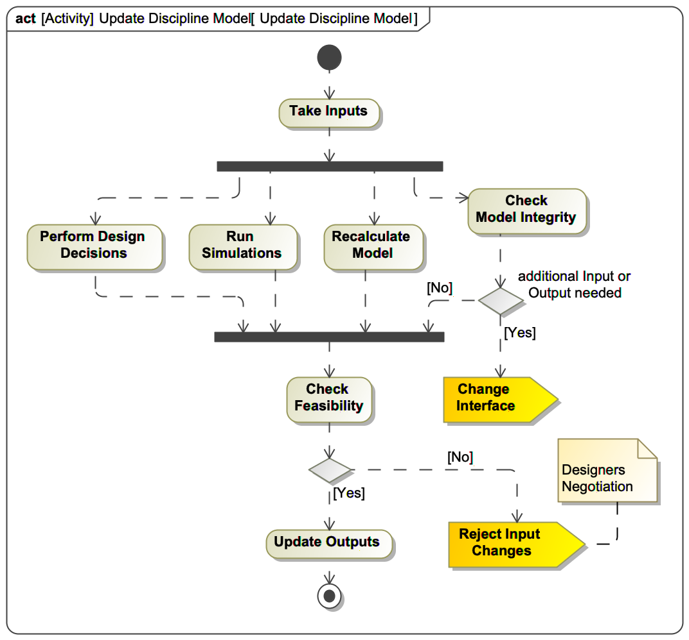

Conceptual Design Study
Preparation
Once a customer has expressed his need to perform a concurrent design study, the preparation starts with 1)
collecting and documenting mission requirements, 2) identifying study constraints (budget, technology,
confidentiality), 3) availability of people and the concurrent design facility. The team is composed of experts
to involve derives from preliminary analysis of the required high-level functions. At the end of the preparation
(or start of the design study) a first joint meeting of the full design team is held together with
representatives of the customer. The purpose of the meeting is to clarify the mission requirements and the role
of each study participant.
Define Figures of Merit
Figures of merit are attributes of the system characterizing its performance, cost, value or other -ilities.
These are used to compare different design concepts.
Most common figures of merit in feasibility studies of spacecraft are:
- spacecraft mass – this determines the requirements on the launcher
- power consumption – this is important to design the system such to balance generation and consumption of
power during operations
- data generated for telemetry, command and customers – this allows to determine the requirements for
storage
and communication
- cost of development – this together with the value provided to the customer allows to evaluate a
mission’s
economic viability
Build Integrated System Model
In order to collaborate on a conceptual design, a model is built that includes all the necessary discipline
perspectives. Some of the disciplines are responsible for the conceptual design of a physical subsystem (e.g.
propulsion, communications), while other disciplines are concerned with non-physical, or transversal issues (ed.
cost, schedule).
This activity is composed of sub-activities, explained in detail further down.
Design Iterations
The core of the design study are the concurrent design iterations. The goal of each iteration is to consolidate
the design by making sure all input parameters take values which are correspondent to the mission requirements
or to the output values produced by other subsystems. Since dependency relationships of subsystems are
transitive and can form cycles, the design of subsystems potentially needs to re-iterated. The process of a
single design iteration is described in the next section. Throughout the design study an arbitrary number of
design iterations can occur, and they operate on a storage which keeps the state of the system model.
The design iteration is itself composed of other sub-activities, described below.
Memorize Design Variant
Once a design iteration is complete, meaning that parametric model is consistent, a snapshot of the integrated
system model is taken for future consultation. In its simplest form a snapshot consists of all the values of
design parameters and the figures of merit are recorded. In a more advanced form, the configuration of all
involved analytic models shall be stored.
Compile Study Report
In conclusion of a conceptual design study one or more resulting system designs, which were evaluated to
satisfy the mission requirements need to be documented and characterized according to common or mission specific
performance measures (e.g. mass, cost, risk, schedule). For the continuation of the project, in case of approval
of the results of the design study, the system requirements contained in the documentation will serve as
starting point for the detailed design phase.
Build Integrated System Model
Systems Decomposition
Analysing the mission requirements high-level functions of the system are derived. Subsystems are defined which
incorporate these functions and are assigned to discipline experts present in the team. The structure of the
system is encoded and stored in a system model.
Define Subsystem Interfaces
For each discipline or subsystem experts define which are the essential design parameters (input) and resulting
attributes (outputs).
Build Subsystem Models
In this step, discipline experts shall come up with models for their respective subsystem. Parametric models map
design parameters to estimates of the essential characteristics of the subsystem. These characteristics either
contribute to the figures of merit of the overall system (e.g. mass) or influence the design of other
subsystems. These models can either be based on first-principles of physics or based on heuristics. Simplified
analytical models for preliminary sizing exist for many subsystems with a design heritage.
Design Iteration

From the dependencies among elements in system model a design structure matrix (DSM) can be derived. Applying a
clustering algorithms to the DSM allows to determine which are more closely dependent subsystems and can propose
a sequence in which to best synchronize the subsystem models with the integrated system model.
Based on this proposed sequence the team leader moderating the design study calls one discipline at a time to
provide updates with respect to his subsystem model.
The procedure of preparing and performing this update is described in a separate procedure in the next section.
After that, depending on whether the subsystem's output parameter values have changed significantly, the
schedule is updated or not. A significant change is one that exceeds the applied margin for uncertainty. This
may depend on organizational policies, but a typical value for the margin is 10%. If the outputs did change more
than that, then the disciplines which depend on them will require to update their subsystem model. In case the
update of a discipline model led to changes of subsystem interfaces and thereby also dependencies, the schedule
needs to be recalculated. Moreover, it can happen that a discipline, instead of updating its outputs, it may
reject the previous modifications. This evokes a negotiation between the respective disciplines and under the
guidance of the team leader agreement on changed parameter values shall be reached.
Once there are no more disciplines on the schedule, it means the integrated system models has converged and
represents a feasible conceptual design and the iteration is finished.
Update Discipline Model

A discipline expert updating a subsystem model performs a simple sequence of activities. First the input values
which are connected to other subsystems need to be updated. Depending on the kind of model, the designer either
executes a calculation, runs a simulation, performs decisions based on prior knowledge or a combination of them.
After that the design expert checks the results for feasibility. If the feasibility is not given, then the
changes the discipline was provided with, shall be rejected. Only if everything is okay, the subsystem's output
parameters are updated.
In parallel the expert checks the model for integrity, and in case additional input or output parameters are
needed the interface is modified accordingly. Changes to the parameters are reflected in the stored system
model.